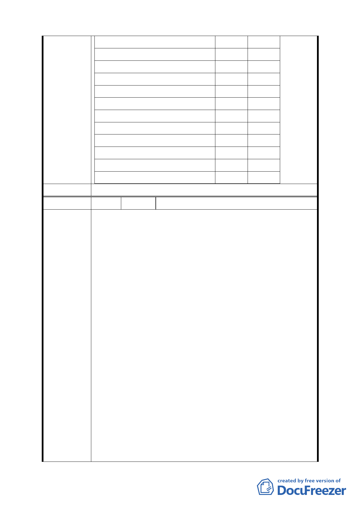

臺北市北投區戶政事務所
768
臺北市監理處北投區服務站
0
北投社會福利服務中心
150
臺北市勞工局就業服務中心北投就業服務站
139
士林地政事務所北投地政工作站
0
臺北市稅捐稽徵處北投分處
549
財政部臺北市國稅局北投稽徵所
800
北投區健康中心
450
陽明醫院門診中心
200
北投區少年輔導組
0
北投清潔隊
434.39
合計
委員會決議 不另劃設北投區行政中心。
7,490.39
編 號 6 陳情人 北投區奇岩社區發展協會－萬建國
1. 各住宅區塊設小型鄰里公園，讓當地居民享受公園之悠
閒，並作為生物跳島之用。R1 東北側之老數樹即可現地
保留。
2. R16 與奇岩抽水站之間因應本計畫變更希能保留一塊綠
地，俾利中崙窄溝本段左右兩側均有鳥禽類生物之屏蔽，
隔絕干擾，以利生態成長。
3. 本區既為生態社區請承辦單位用生態方法設計，而不僅從
工程便利當唯一之選項。
4. 細部計畫圖四之親水地帶請參考前次計畫位置，請勿重新
規劃新位置，且與細部計畫圖不同。
陳情理由及
建議辦法
5. 公一公二生態公園，目標要求繁多不易達成，希參考自然
環境及水文資料再設定。公三宜設為生態公園；中崙窄溝
宜整體考量並給予足夠腹地，並將水源重新導回，以利復
育。
6. 請澄清細部計畫項次-捌之抽水站開闢經費 900 萬元使用
地點，因本區奇岩抽水站早已使用多時。
7. 管制要點：
（1）一（八）請詳細說明如何保護水文及作法。
（2）九（二）請將路樹改為本區已生存已久位住宅區之原本
區樹木移植，而非種新外來樹木。（四）項不生態設計請
與奇岩發展協會生態人員協調再定案。
14